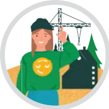
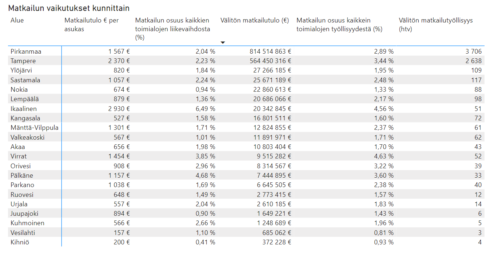

1 Elinvoiman edellytykset kunnossa

1.1 Kehitämme valtakunnallisesti ja kansainvälisesti kilpailukykyisiä alueita yritystoiminnan tarpeisiin - Lamminrahka, Saarenmaa, Tarastenjärvi
Lamminrahka
Koulu ja liikuntapuisto on käytössä. Etelä-osaa rakennetaan ja pohjoisosan kaava (Ojalan suunta) on tulossa hyväksyttäväksi loppuvuodesta. Kauppakeskuksen asemakaava on valmisteilla.
Tarastejärvi
Alueelle on saatu isoja toimijoita ja uusia etsitään.
Saarenmaa
Kehä 2 suunnittelua on viety eteenpäin. Yleiskaava on hallinto-oikeudessa ja päätöstä odotetaan syksyn aikana.
1.2 Vastaamme ripeästi yritysten toimipaikka- ja tonttitarpeisiin
1.3 Kehitämme houkuttelevaa ja elävää keskustaa yhdessä yrittäjien kanssa
1.4 Hyödynnämme keskeistä sijaintia vetovoimaisella Tampereen kaupunkiseudulla
1.5 Kehitämme liikenneverkkoa (Käynnistämme raideliikennehankkeita, Aloitamme Kehä 2:n rakentamisen yhdessä Tampereen kanssa, Osallistumme valtateiden 9 ja 12 kehittämiseen)
Liikenneverkkohankkeet ovat keskeisiä edunvalvonta-asioita. Vt9 väli Alasjärvi-käpykangas kunnostaminen ja rahoituksen varmistanen sekä Vt12 Alasjärvi-Huutijärvi investointisuunnitelman laatiminen.
1.6 Kehitämme seudullisessa yhteistyössä matkailupalveluja ja mahdollistamme kasvun
Uusin matkailun tulo- ja työllisyysselvitys, linkki uutiseen

1.7 Keskitymme työllisyydenhoitoon seudullisesti ja omin toimin
1.8 Tuemme yrityksiä osaavan työvoiman saamisessa
1.9 Edistämme työllisyyttä yritysten, oppilaitosten ja työnhakijoiden yhteistyöllä
Kangasalan kaupunki, Tredu, Business Kangasala, Kangasalan yrittäjät ja Pälkäneen kunta pitävät säännöllisesti tiedonvaihtopalavereita työllisyyden kehittymisestä ja yritysten, oppilaitosten sekä kaupungin kehittämismahdollisuuksista. (Kumppanuussopimus)